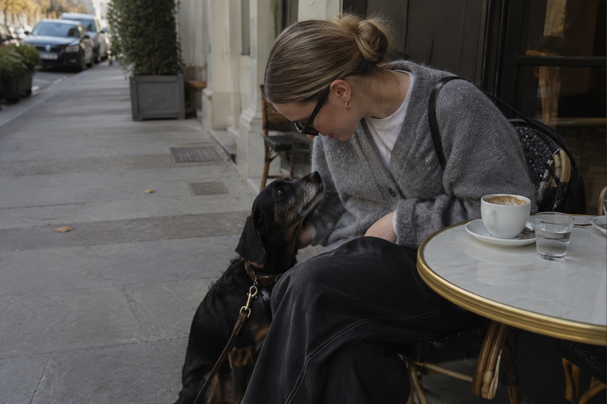

Discover the city together
Look closer.
Wander wiser.
A playful companion for your Paris days—part city discovery, part dog knowledge, and always something to share.
Begin with Paris ↓
Play & Learn · Paris
Small discoveries
for the two of you.
Open any card when curiosity strikes. There is no score and no right order—just thoughtful things to notice, understand and try together.
Your Paris discoveries
0 moments opened.
Your progress stays privately on this device.